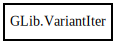

GLib.VariantIter – glib-2.0 Reference Manual
Packages
glib-2.0
GLib
VariantIter
VariantIter
n_children
next
next_value
VariantIter
Object Hierarchy:

Description:
[
Compact
]
[
Version
( since =
"2.24"
) ]
public
class
VariantIter
Namespace:
GLib
Package:
glib-2.0
Content:
Creation methods:
public
VariantIter
(
Variant
value)
Methods:
public
size_t
n_children
()
public
bool
next
(
string
format_string, ...)
public
Variant
?
next_value
()